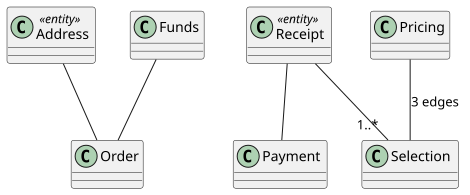

Graph projections
The compiler renders diagrams from views. A view says which things to include, query, collapse, or exclude. It does not store their visual coordinates.
Relationships come from requirement edges. State machines come from recorded transitions. Deleting a rendered diagram does not delete those facts. Fix the graph or its source prose when the meaning is wrong.

View types
| View | Question it helps answer |
|---|---|
| Component | What are the system’s larger parts and dependencies? |
| Class | What types and entities are inside this scope? |
| Use case | Which actors participate in the described flows? |
| Sequence | Who interacts with whom, and in what flow? |
| State | What states and transitions belong to this subject? |
| Object | What instances exist and how do they relate? |
Default views are derived from the graph. A curated view can focus a reader’s question without creating a second set of product facts.
Collapsed and lifted relationships
A relationship touching a hidden descendant lifts to its nearest shown ancestor. Collapsed relationships are grouped by direction and type. A count can stand for several contributing edges.
A top-level arrow is therefore a summary. Expand the level or inspect its requirements before interpreting it as one direct interaction. Over-limit views auto-collapse larger subtrees and carry a visible note.
PlantUML as document input
A PlantUML fence in a source document is parsed as a diagram section. It can state structure for reconciliation, alongside prose. An ordinary generated rendering under compiler state is output, not an independent source document.
When the input diagram and prose disagree, resolve the obligation rather than editing a generated SVG. Keep the original statement you want the compiler to honor.
Rendering files
Native commits emit .puml and .svg beneath .jazyk/<set-id>/diagrams/<kind>/. A PNG can be rendered on demand. Browser-only backends may not render new SVGs; demos can ship renderings to inspect.
Use jazyk docsgen --set Main for graph documentation and diagram pages, or jazyk viewer --set Main for an offline graph snapshot.